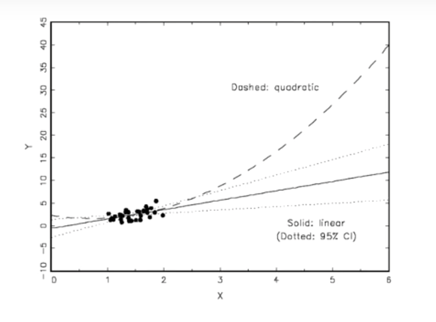
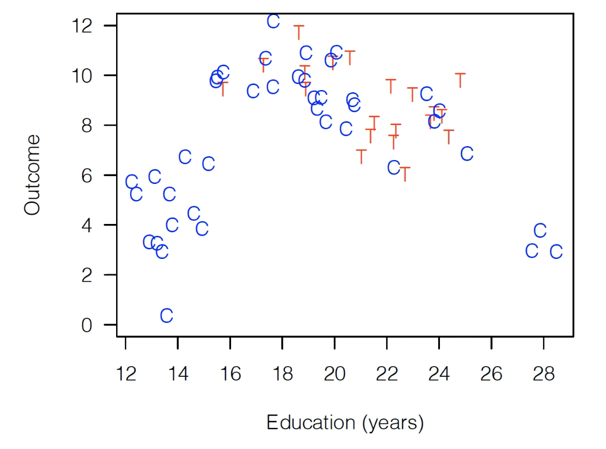
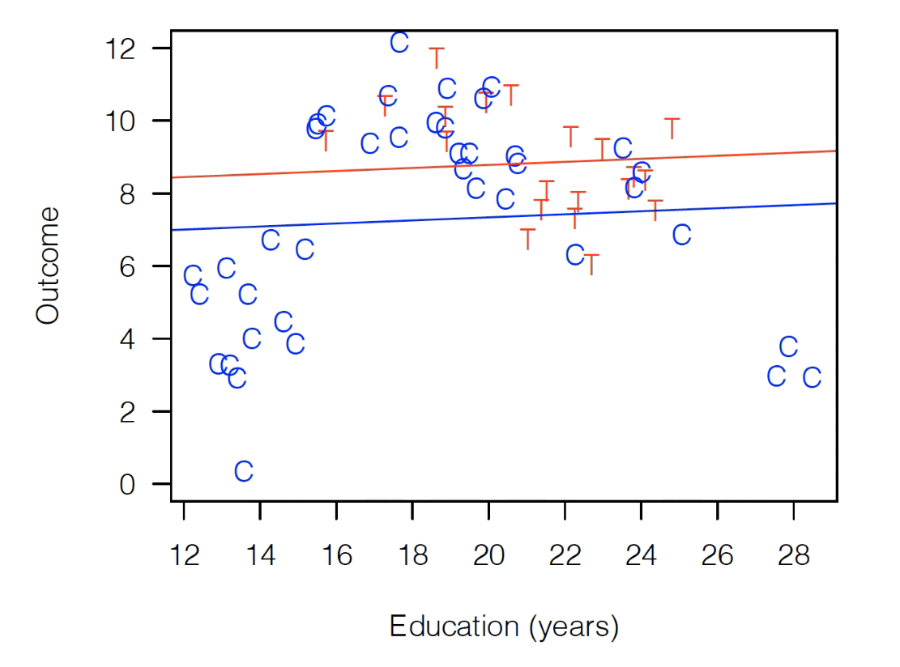
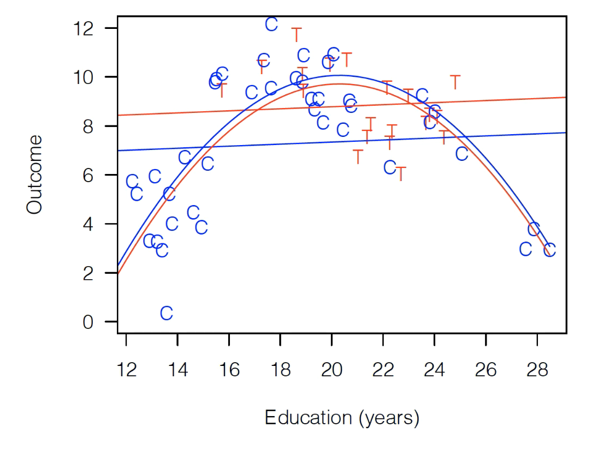
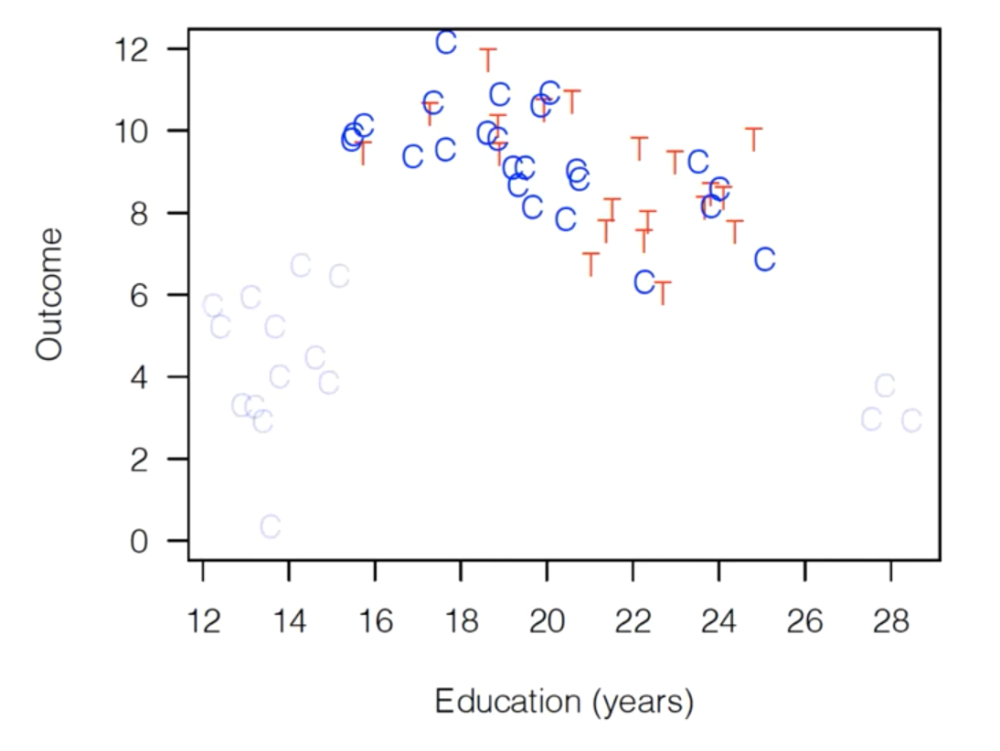
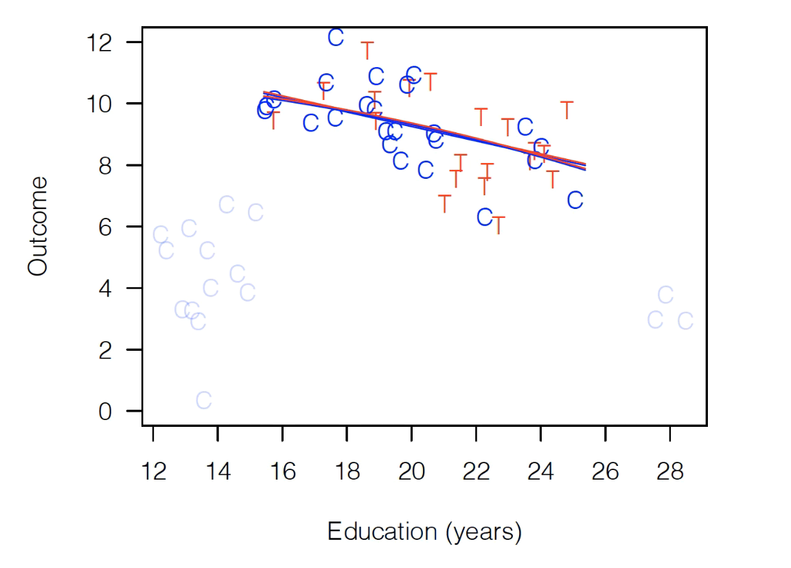

What Is Matching?#
This week we’ll be exploring matching: an approach to analyzing observational data that is primarily designed to do the same types of analyses as regression, but with less sensitivity to the functional form assumptions implicit to regression.
As we move forward, I’ll be drawing a lot (including most figures) from Ho, Imai, King and Stuart (2007) and two of Gary King’s public lectures on youtube (theory and implementation). I’ve streamlined his argument and tried to adapt it for the conceptual frameworks, language, and level of technical depth we’re targeting in this class, but if you’re really into this topic, that source material may be extremely valuable to explore.
Model Dependency#
To understand matching, it helps to start with the problem matching is designed to solve: model dependence.
The term model dependence refers to a situation in which the results of an analysis are sensitive to apparently small decisions made by the researcher in how they specify a regression – for example, whether they include \(X\) in their regression or \(X + X^2\), or whether they use \(X\) or \(log(X)\) as an independent variable.
“But wait!” you may say: we have all sorts of test statistics for evaluating what fits our data best, so shouldn’t we be able to just pick the specification with the best [insert test statistic of choice here]?
Yes… most of the time. But you get into trouble when you want to use a model fit on data that covers a certain range of values to make predictions about outcomes outside that range. For example, consider the following example:

Here, we have a model where either a quadratic functional form or a linear functional form fits our data extremely well. Maybe there’s a third decimal place distinction in some test statistics, but really, they’re the same in the area where we have our actual data.
Now suppose you’re asked to make predictions about outcomes at, say, \(x=5\). Out there, the functional form you choose has a tremendous impact! This is an example of “model dependence” that you can’t resolve with standard regression diagnostics.
Note that “model dependence” is a condition that depends on the application. If you fit this model to predict \(Y\) at \(x=1.02315\), there’s probably very little model dependence. But if you want to predict a value at \(x=5\), there is. Something we’ll come back to.
Model Dependency, Causal Inference, and Imbalance#
OK, fine, but I know I’m never supposed to extrapolate that far from my data, so who cares?
Well… funny story: it turns out we do this in causal inference all the time. That’s because if our treatment group and our control groups look very different from one another, then we are sometimes actually extrapolating a relationship we estimate from the control group data to estimate what the treatment group would look like in areas where we have no actual data from the treatment group.
To illustrate, suppose we have the following observational data (i.e. this is data from the world, not a randomized experiment). It’s made up, but let’s pretend it comes from a survey of consumers, where Treatment is whether the customer came to the store with a coupon, and “Outcome” is spending. Red T’s are consumers who came into the store with coupons, blue Cs are consumers who came in without coupons. (Again: they chose whether to bring in coupons — this is not an experiment!)

As you can see, this data is badly imbalanced, meaning that consumers’ education values are very different for our control and treatment populations. For the control group, Education ranges all the way from 12-28 years, while our treated group only has observations between 16 and 24.
Warning: the way the term “imbalanced” is being used in this literature is very different from how it is used in the machine learning literature (where it describes data in which a target variable is mostly of one class). This is just another situation where scholars from different academic traditions use the same term but mean entirely different things.
Why does this matter? Suppose we fit the following regression:
That fit would look something like this:

As you can see, Treatment is above Control, so our model is saying our coupon had a large positive treatment effect!
That clearly seems stange, though. The model is not doing a good job of fitting those control observations, so instead let’s try this:
That looks like this:

Well, now the model suggests the treatment effect is negative (the red fit is lower than the blue fit)!
So which is right? Well, the thing that should probably make us uncomfortable is that the way we drew that red parabola is that while we technically fit the model on the full dataset, the shape of that curve is being driven entirely by control observations (since there are no treated observations on either side of the education distribution). Our treatment observations played no meaningful role in the inverted U-shape the model is estimating.
Now, if you want to take a strong theoretical position and say “I’m really confident education plays the same role for people who brought in coupons as those who did not,” then you can stop here. But if you think it’s possible that the way education shapes spending is different for control consumers and treated consumers, then it should make you uncomfortable that our model of the relationship between education and spending is coming entirely from control consumers.
And that’s where matching comes in.
Matching: Better thought of as pruning#
When you hear the term “matching,” your first thought is probably that the method’s goal is to find pairs of observations that are similar and compare them. And you wouldn’t be wrong in thinking that, but I think that framing misses what differentiates matching from methods like regression.
A better way to think of matching is as a method for pruning observations — like those control observations with high and low educations — that can’t be matched to similar treated observations.
In other words, at its core, matching is about pruning back your dataset until you’re left with control and treatment observations that look relatively similar. Any control observations that are completely unlike any treatment observation (in terms of our explanatory variables) you drop, and any treatment observations that are completely unlike any controls you drop.
So if we did a form of matching on this dataset — the technical details of exactly what form of matching we did don’t matter — we’d end up with a dataset that looks something like this, where dropped observations are greyed out:

As you can see, we’ve dropped all the control observations that are completely unlike our treatment variables. As a result, the range of education for control variables and treatment variables is about the same — we have a “balanced” dataset.
And now it doesn’t matter if we do a simple linear fit or if we include a quadratic term – the results look exactly the same (i.e. no model dependence):

And if we limit our focus to these observations, we see that regardless of the functional form we put in our regression, we get no treatment effect.
The Cost of Matching#
So, what do we lose when we do matching? The main answer is that the group of people for whom our treatment effect is being estimated is changing dramatically. We aren’t estimating an effect for the whole population we started with; we’re only estimating the effect for this smaller group where T and C overlap, which may or may not be useful in later applications.
In these observational causal studies, we often have far more control observations than treatment observations. Moreover, the control observations will often cover a much bigger range of your explanatory variables. If not many people get treated, it makes sense that the people who get treated may all look similar and so may fall into a smaller range of, say, education than the general populous.
In these situations – where during matching you get to keep all your treated observations because they all have close controls, but you drop some controls — then what you’re estimating is the Average Treated on the Treated, which isn’t half bad (it’s often all we get with observational data).
But the impact is a little more complicated if you have Treated observations that don’t look like any control observations. If you end up dropping both control and treatment observations during matching, then you’re estimating an effect on… the sample of people in the range of explanatory variables for which there are both treated and untreated observations. And that’s a more unusual quantity.
Causal Inference Assumptions#
Before closing our discussion of the high-level pros and cons of matching, it’s worth emphasizing one crucial point: both matching and good old-fashioned linear regression rest on the same basic assumption when it comes to causal inference: there are no baseline differences between the treatment and control groups after conditioning on observable variables. In matching, we are just conditioning on observatory variables differently.
Matching, in other words, is a way to address possible modeling errors, not to fundamentally change what assumptions we’re making about the differences between treatment and control groups in terms of potential outcomes.
In Summary#
Matching is really best thought of a way of pruning your data to a sample where C and T observations look similar (impoves balance)
Where the original data has observations of C and T that don’t look similar (it’s imbalanced), matching helps reduce the sensitivity of results to the functional form assumptions you make in your regression.
But by changing the data on which you’re making an estimate, you are also changing the actually population for which you’re estimating your effect, which may be important to understand.
To use matching for causal inference, you have to make the same basic assumption you use for regular linear regression: controlling for observable differences is enough to eliminate baseline differences in terms of potential outcomes for our treated and untreated observations.